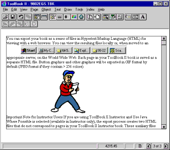

Australian Toolbook User Group


RTF traps Solution by William McKee
Importing Large RTF Text Files Solution by Asymetrix Tech Support
Question: is there any possibility of importing a RTF-file of about 300k into ToolBook?
Answer: As soon as you start chunking a rtf file you will have problems since the main header on the first chunk is not present on the additional chunks, thus the additional pieces are incomplete. I know of no practical way to chunking an rtf file so that the problem you are encountering will not occur. A regular text file will not be a problem.
Getting Rich Text from Word into Toolbook Solution by John Gossman, Asymetrix
Question: I have some text in word I want to import into Toolbook and preserve formatting. From Word I saved the file as a richtext format file, foo.rtf. Then I created this button with the following handle
to handle buttonClick openFile "foo" readFile "foo" to EOF richText of field "foo" = It closeFile "foo" end buttonClick
After I run this program I get the proper text in field "foo", but it is on one long line if the field is set to no wrap. If the field is set to wrap I get all the text but it is all mixed up. I also tried to use the copy/paste command but also there I get mixed up text.
Answer: This is a bug in Word. If you copy the RTF from Word into WordPad (which has special handling for Word's RTF) and then paste to Toolbook it works fine.
Fields with graphics - removing resources for graphics that have been deleted Solution by Butch Carino [Asymetrix]
Whenever you import an RTF file with a graphic ToolBook will always make that graphic a resource. The only way to get rid of that resource is to use this to delete any unused resources.
The following script will search bitmap, cursor, icon, menuBar, and palette resources of a book and delete the unused resources. Rather than searching through all resources to determine which are used, use the following script.
It's benefical to remove unused resources in order to reduce the book size.
Place the following script into the script of a button:
to handle buttonClick
resTypeList = "bitmap,cursor,icon,menuBar,palette"
step i from 1 to itemCount(resTypeList)
resList = resourceList(item i of resTypeList,\
this book)
step j from 1 to itemCount(resList)
temp = "resNum = item 1 of resourceInfo of" && \
item j of resList
execute temp
if resNum = 0 -- resource unused
temp = "remove resource" && \
item j of resList && "of this book"
execute temp
end if
end step
end step
end
Getting graphics from RTF files into Toolbook text fields Solution by Denny - Tech Support
Question: Why doesn't Toolbook let me use RTF files with graphics in it? I need the graphics to explain some concepts. Please, what can I do?

Answer: Follow these steps:
 Picture Sizing Tip:
Picture Sizing Tip:
In order to change the size of an imported graphic there are two options: you can do this before you paste the graphic into the text field or make adjustments after the paste: To resize the graphic first (which is the easiest option) do the following:
1. Use the menu File / Import Graphic
2. Resize as necessary
3. Properties/Convert to turn it into a Toolbook picture
4. Edit/Cut then position your cursor in the field text, Paste.
Alternatively, Skip the resize and convert steps (steps 2 & 3). Later on you can edit the picture in the text field by slecting the graphic, right-mouse-click, select graphic. You will then be in the resource manager, where you can edit the bitmap by clicking on 'Edit'. The bitmap editor has a facility to resize and decrease colors in you graphic - important, since more colors mean bigger toolbook file sizes. -Andy Bulka
To access thousands more tips offline - download Toolbook Knowledge Nuggets